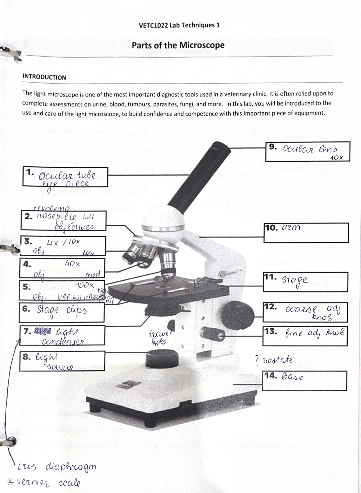
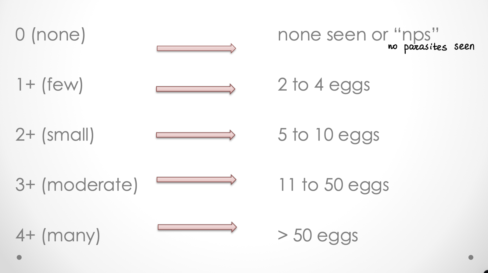
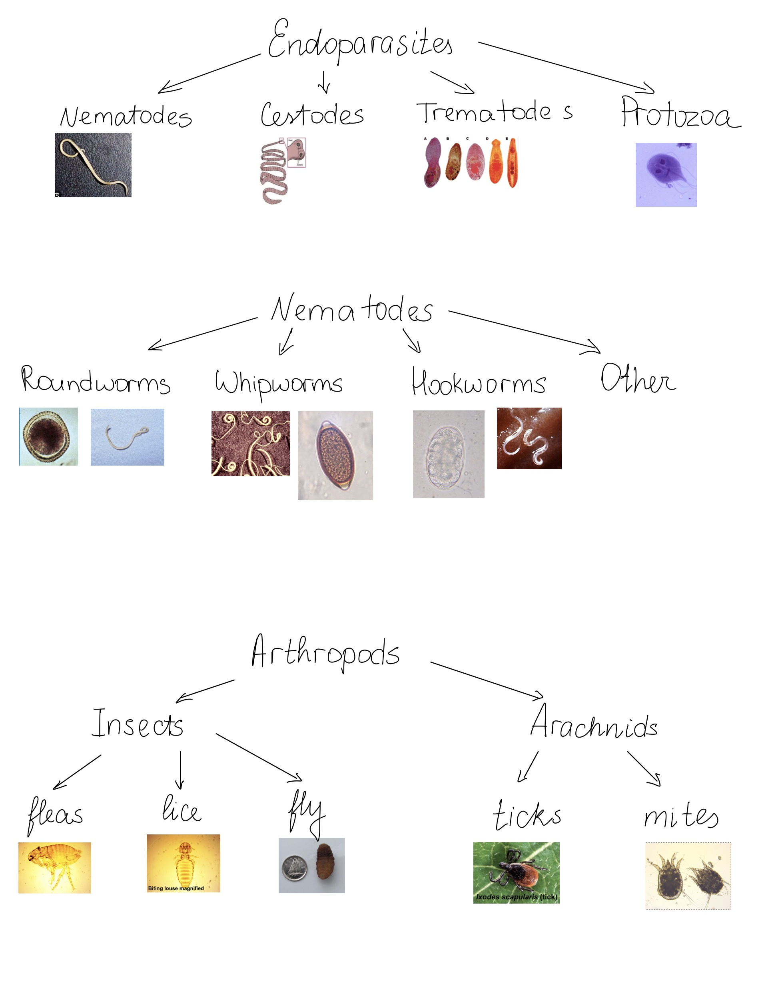

Welcome to the Parasite Portfolio, a comprehensive study guide for our
parasitology part of the Lab class. This portfolio brings together
essential terms, diagnostic procedures, lifecycle details, and visuals
of various parasites we saw in lab.
I was a software developer for 6 years and I thought it would be fun to
create a little website for this assignment.
A compound light microscope consists of 2 separate lens systems: the ocular (9) and the objective (3-5).
Total magnification = 10 (ocular) x N (objective) = 10N
A device that applies a centrifugal (rotation) force to separate various components of a liquid based on their density.
Example:
Blood = RBC + WBC + plasma/serum Urine = sediment + supernatant
Fecal flotation = meniscus + solution + sediment
Source - Lab Lecture Presentation
The number of ova or parasites is the number viewed on the entire slide for each parasite reported
Source - Lab Lecture Presentation
Materials:
Procedure:
Materials:
Procedure:
Source - Hickie, J., & Blanchard, L. (2024). Fig. 50.1. Laboratory Procedures for Veterinary Technicians (7th ed., p. 323). Elsevier Canada.
Materials:
Procedure:
Materials:
Procedure:
Materials:
Procedure:
Materials:
Procedure:

Click to view details
Click to view details
Click to view details
Click to view details